The official online documentation for pytest contains much more information about using pytest.
In a computer program, an assertion is a statement that causes the computer to check if a comparison is true. When the computer checks the comparison, if the comparison is true, the computer will continue to execute the code in the program. However, if the comparison is false, the computer will raise an AssertionError, which will likely cause the program to terminate.
A programmer writes assertions in a program to inform the computer of comparisons that must be true in order for the program to run successfully. The Python keyword to write an assertion is assert. Imagine a program used by a bank to track account balances, deposits, and withdrawals. A programmer might write the first few lines of the deposit function like so:
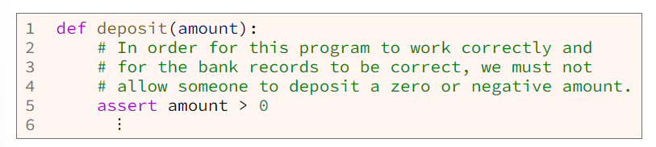The assert statement at line 5 in the previous example will cause the computer to check if the amount is greater than zero (0). If the amount is greater than zero, the computer will continue to execute the program. However, if the amount is zero or less (negative), the computer will raise an AssertionError, which will likely cause the program to terminate.
A programmer can write any valid Python comparison in an assert statement. Here are a few examples:
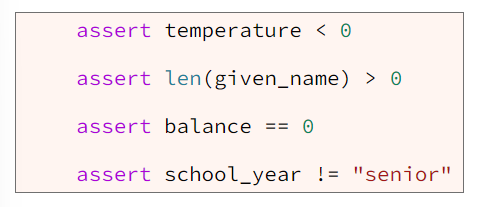Pytest is a third-party Python module that makes it easy to write and run test functions. There are other Python testing modules besides pytest, but pytest seems to be the easiest to use. Pytest is not a standard Python module. It is a third-party module. This means that when you installed Python on your computer, pytest was not installed, and you will need to install pytest in order to use it. You will want to use a Python module called "pip" to install pytest.
Pytest allows a programmer to write simple test functions that use the Python assert statement to verify that a function returns a correct result. For example, if we want to verify that the built-in min function works correctly, we could write a test function like this:
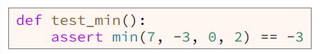In the previous function, the assert statement will cause the computer to first call the min function and pass 7, -3, 0, and 2 as arguments to the min function. The min function will find the minimum value of its parameters and return that minimum value. THen the assert statement will compare the returned minimum value to -3. If the returned value is not -3, the assert statement will raise an exception which will cause pytest to print an error message.
Within a computer's memory, everything (all numbers, text, sound, pictures, movies, everything) is stored using the binary number system. While executing a Python program, a computer stores integers in binary in a way that exactly represents the inters. For example, a computer stores the integer 23 as 00010111 in binary which is an exact representation of decimal 23. However, a computer approximates floating-point numbers (numbers with digits after the decimal place). For example, while executing a Python program, a computer stores the floating-point number 23.7 as binary 0100000000110111101100110011001100110011001100110011001100110011. This binary number is actually 23.69999999999999928945726424 in decimal which is an approximation to 23.7.
Because computers approximate floating-point numbers, we must carefully compare them in our test functions. It is bad practice to check if floating-point numbers are equal using just the equality operator (==). A better way to compare two floating-point numbers is to subtract them and check if their difference is small as shown as line 8 of example 4.
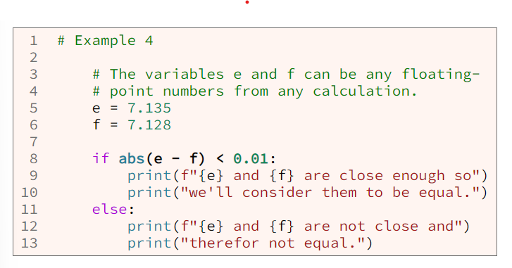In example 4 at line 8, if the difference between e and f is less than 0.01, the computer will consider the two numbers tro be equal. The number 0.01 in the comparison at line 6 is called the tolerance. The tolerance is the maximum difference between two floating-point numbers that the programmer will allow and still consider the numbers to be equal.
The comparison in example 4 at line 8 is a little tedious to write and read. Also, choosing the tolerance is sometimes difficult. The pytest module contains a function named approx to help us compare floating-point numbers more easily. The approx function compares two floating-point numbers and returns true if they are equal within an appropriate tolerance.
The approx function has the following function header:

Notice that the last three parameters of the approx function have default values: rel=none, abs=none, nan_ok=false. Because they have default values, when we call approx, we're not required to pass arguments for the last three parameters. In other words in a test function, we can approx like this:
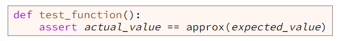If we call approx with just one argument, approx will compare the actual value and expected value and return trie if the difference between the two values is less than one millionth of the expected value. In other words, one millionth of the expected value is the default tolerance. Sometimes this is not the right tolerance. The approx function has two parameters, rel and abs, that we an use to give approx a better tolerance to use in its comparison. For example, to test the math.sqrt function, we could write a test function like this:
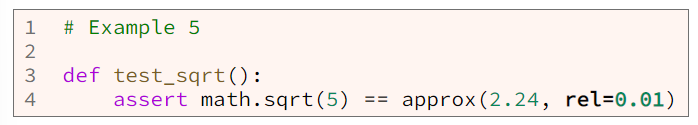Notive the rel named argument in line 4 of the previous example. The rel named argument causes approx to compute the tolerance relative to the expected value. This means that the assert statement in the previous example causes the computer to verify that the actual value returned from math.sqrt(5) is within 1% (0.01) of 2.24. When a programmer uses rel named argument, the approx function uses code similar to example 6 to determine if the actual and expected values are equal.
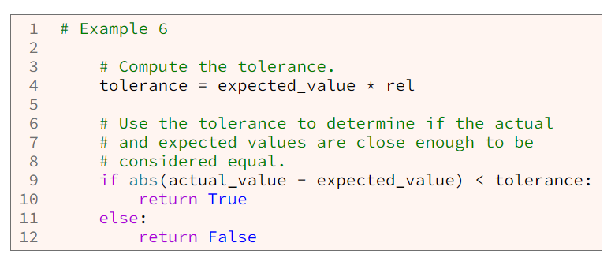From lines 4 and 9 of example 6, we learn that approx will return true if the difference between the actual value returned from lath.sqrt(5) and the expected value is less than 0.0224 (2.24 * 0.01).
Notice the abs named argument in line 4 of the previous example. The abs named argument causes the approx function to return true if the difference between the actual and expected values is less than the number in abs (0.01 in the previous example). This is different from the rel named argument which causes approx to return true if the difference is less rel * expected_value. The abs named argument is simpler and easier to understand than the rel name argument.
To test a function you should do the following:
Below is a simple function named "cels_from_fahr" that converts a temperature in Fahrenheit to Celcius and returns the Celcius temperature. The cels_from_fehr function is part of a larger Python program in a file named weather.py.
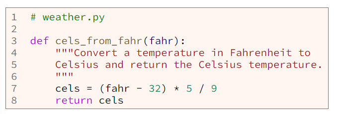We want to test the cels_from_fahr function. From the function header at line 3 in weather.py, we see that cels_from_fahr takes one parameter named fahr. To adequately test this function, we should call it at least three times with the following arguments.
In a separate file named test_weather.py we write a test function named test_cels_from_fahr as follows:
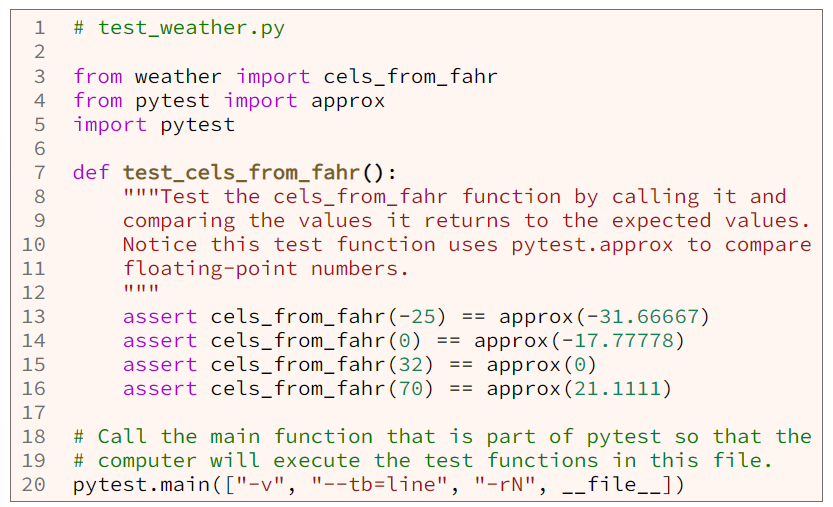Notice in test_weather.py at line 13-16 that the test function test_cels_from_fahr call the program function cels_from_fahr four times: once with a negative number, once with zero, and twice with positive numbers. Notie also that the function uses assert and approx.
After writing the test function, we use pytest to run the test function. At line 20, instead of writing a call to the main function, as we do in program files, we write a call to the pytest.main function. This pytest.main will cause the pytest module to run our test functions. When pytest tuns our test functions. When pytest runs our test function, it will produce output that tells us if the test passed or failed like so:
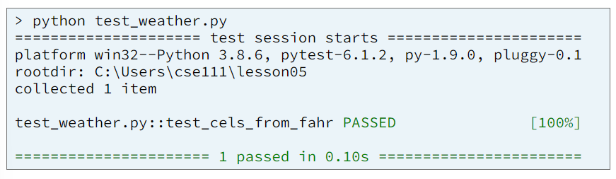As shown above, pytest runs the test_cels_from_fahr function which calls the cels_from_fahr function four times and verifies that cels_from_fahr returns the correct value each time. We can see from the output of pytest, "PASSED [100%]" and "1 passed", that the cels_from_fahr function retruned the expected (correct) result all four times.
It is a good idea to separate test functions and program functions because the separation makes it easy to release a program to users without releasing the test functions to them. In genera, users of a program don't want the test functions. One consequence of writing program functions and test functions in separate files is that we must add an import statement at the top of the test file that imports all the program functions that will be tested.
Line 3 from test_weather.py above is an example of an import statement that imports functions from a program file. Line 3 matches this template:
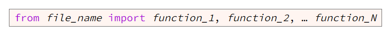When the computer imports function from a file, the computer immediately executes all statements that are not written inside a function. This includes the statement to call the main function:
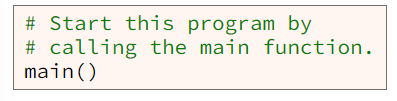This means that when we run our test functions, the computer will import our program functions and at the same time, will execute the call to main() which will start the program executing. However, we don't want the computer to execute the program while it is executing the test functions, so we have a problem. How can we get the computer to import the program functions without executing main function> Fortunately, the developers of Python gave us a solution to this problem. Instead of writing the following code to start our program running
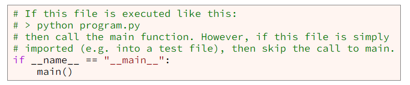Writing the if statement above the call to main() is the correct way to write code to start a program. The Python programming language guarantees that when the computer imports the program functions (in order to test them), the comparison in the if statement will be false, so the computer will skip the call to main(). At another time, when the computer executes the program (not the test functions), the comparison in the if statement will be true, which will cause the omputer to call the main function and start the program.